Refactoring Large, Stubborn Codebases
Jake Zimmerman
Getty D. Ritter


November 19, 2024
Complaints about stubborn codebases
- Our code isn’t modular enough!
This dependency is 10 years out of date!
We need to change how we talk to the database!
…
→ We can refactor to a happy state!
Best to centralize the refactor ☀️
Have one team drive the refactor:
concentrates expertise
most problems will be repeat problemsincentivizes automation
fewer engineer-hours overallavoids idle time
no need to wait for each team to plan and prioritize
Centralized migration needs two things:
Leverage over the codebase
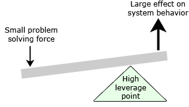
Way to ratchet incremental progress
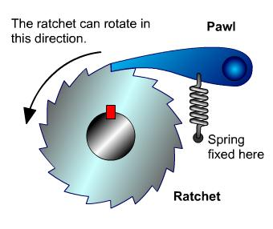
To
you need to
and to
refactor a large, stubborn codebase
have a point of leverage
pick good ratchets.
Agenda 🎯
Improving developer satisfaction with Sorbet
Making a Ruby monolith more modular
Lessons learned from ratchets ratcheted
🥺 Stripe’s developers were unhappy
“hard to understand”
“waiting for tests is slow”
“only breaks in production”
“don’t trust the docs”
“too much low-quality code”
(sentiment from company-wide survey)
💡 Building Sorbet introduced leverage
“hard to understand”
“waiting for tests is slow”
“only breaks in production”
“don’t trust the docs”
“too much low-quality code”
→ IDE aids
understanding
→ all code type checks in
seconds
→ type checker catches bugs in
CI
→ runtime makes types
trustworthy
→ bad code is hard to
type
(sentiment from company-wide survey)
Brief history of Sorbet 👨🏫
- Began fall 2017
- Stripe: ~800 employees (200 – 400 engineers)
- Initial project: 3 engineers, full time
Timeline
- 9 months to build Sorbet…
… but has served as the foundation for hundreds of codemods - 3 months to get to 75% adoption…
…contained to just three engineers
Aside: you can do it too! 👷🏼♀️
Tools that you can use to bootstrap something:
- ESLint, RuboCop, your language’s linter
- Clang compiler plugins, C# static analyzers, go analysis package
- BYO: tree-sitter parsers, LSP server libraries, …
- GitHub code search for example projects using these tools
Ratcheting with # typed comments
# typed comment at the top of each
file
# typed: false
# typed: true
# typed: strict
→ just syntax and constants
→ inference in methods
→ every method needs a signature
typed: false →
true
💡 local, incremental, and actionable
Alternatives to # typed: comment:
by folder → too broad
(not local enough, not incremental enough)by coverage percent → too granular
(noisy, hard to action)
actionable = high signal, low noise
Developer satisfaction improved because
we
by
and
refactored a large, stubborn codebase
having a point of leverage (Sorbet)
picking good ratchets (# typed:)
Agenda 🎯
Improving developer satisfaction with Sorbet
Making a Ruby monolith more modular
Lessons learned from ratchets ratcheted
Why do we need modularity?
Simple example
Simple example
Simple example
Simple example
Well-intentioned changes can produce tangled code
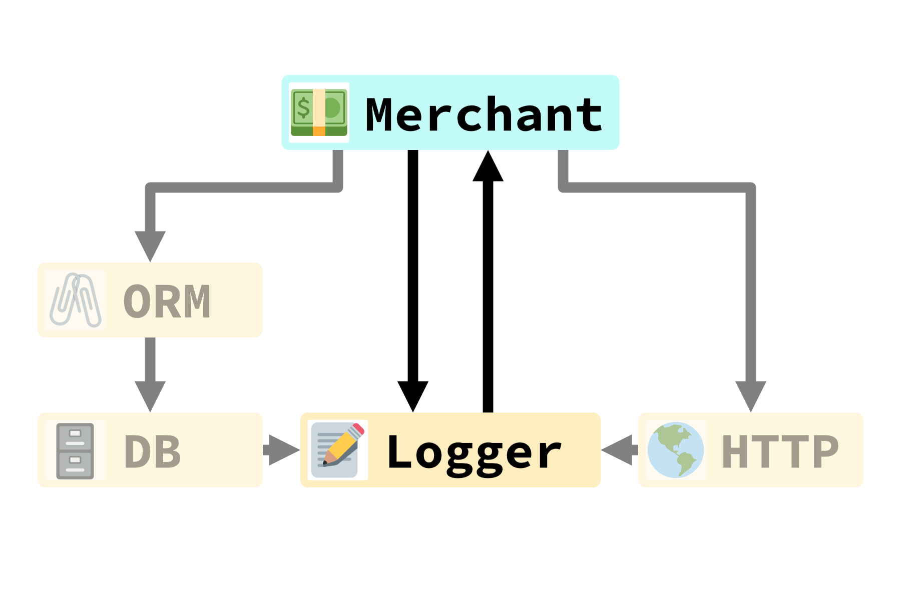
…and tangled code has non-local effects!
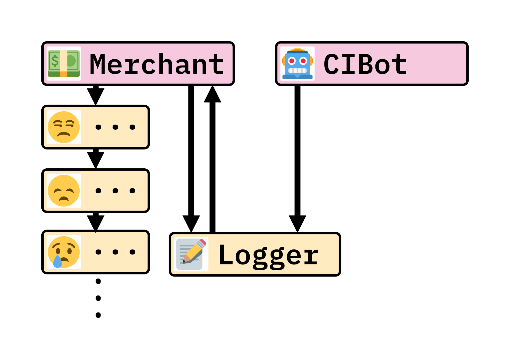
Why do we need modularity?
Tangled code is…
- difficult to debug
- difficult to test
- prone to larger deploy artifacts
- prone to higher memory usage
A drag on both developer velocity and runtime performance
Point of leverage: packaging
Point of leverage: layering
The essential principle is that any element of a layer depends only on other elements in the same layer or on elements of the layer ’beneath’ it. Communication upward must pass through some indirect mechanism.
—Eric Evans, Domain-Driven Design: Tackling Complexity in the Heart of Software
Point of leverage: layering
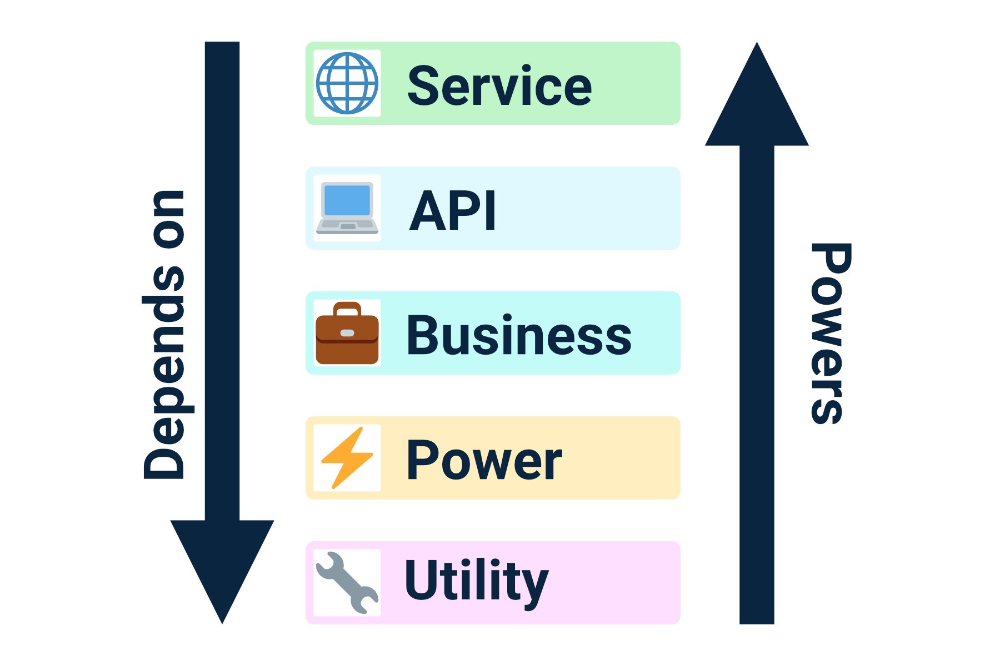
Point of leverage: layering
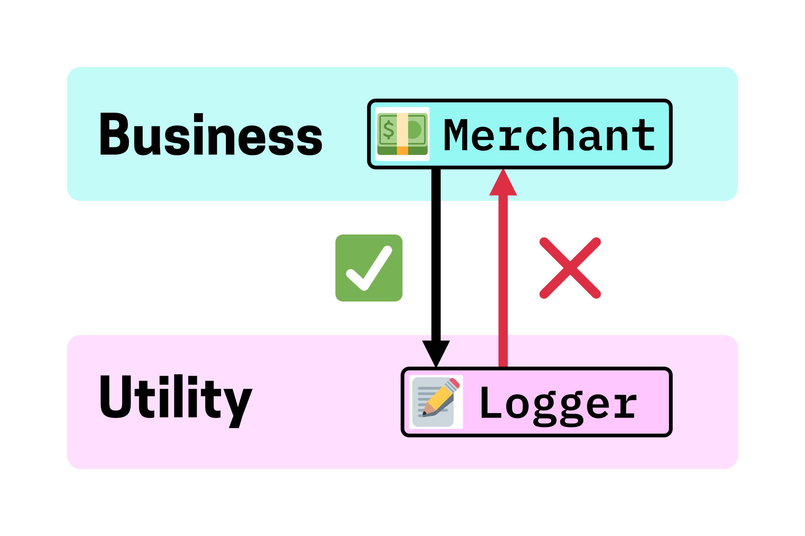
Point of leverage: layering
Building a ratchet: strict_dependencies
strict_dependencies'false'strict_dependencies'layered'strict_dependencies'dag'
Moving from layered to dag
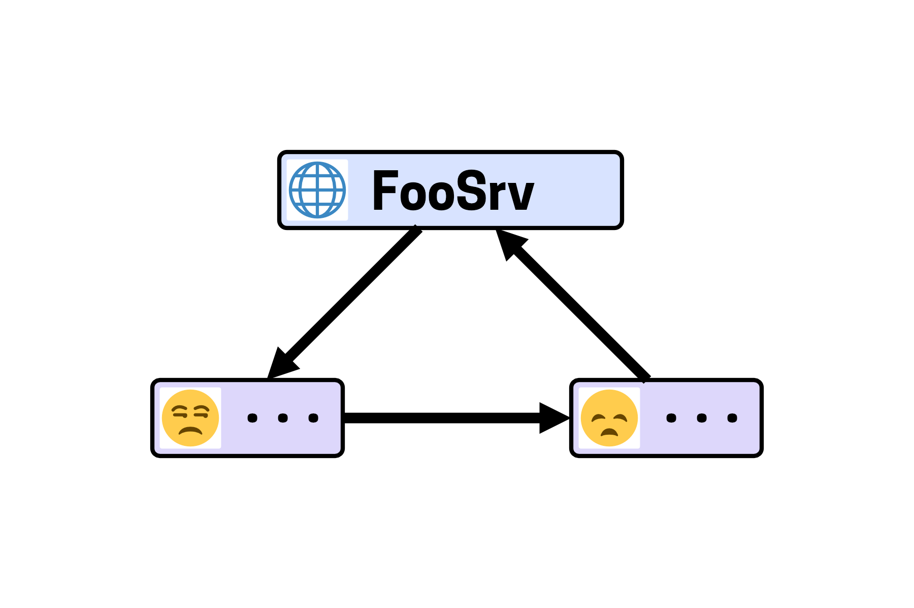
Moving from layered to dag
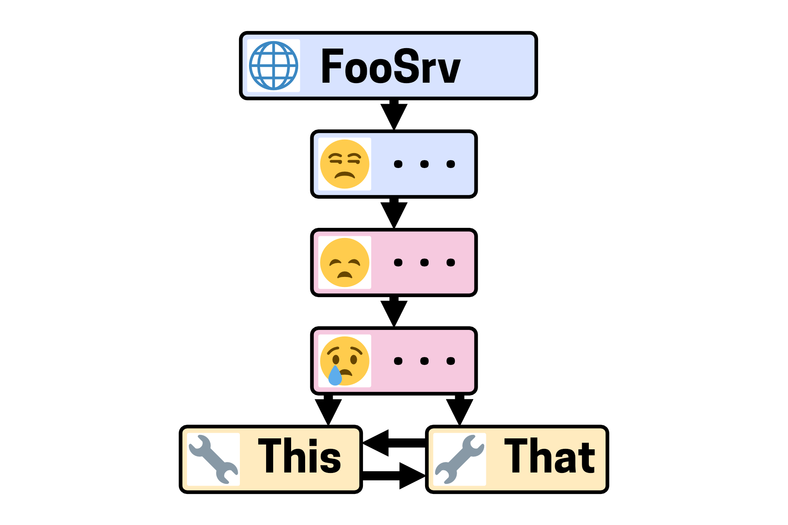
Moving from layered to dag
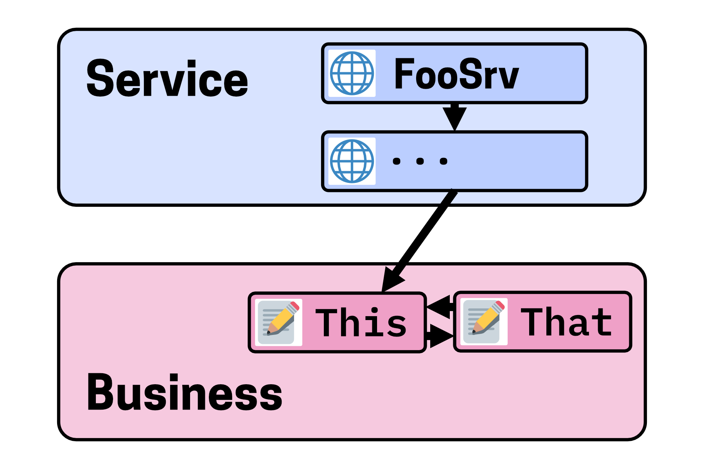
Moving from layered to dag
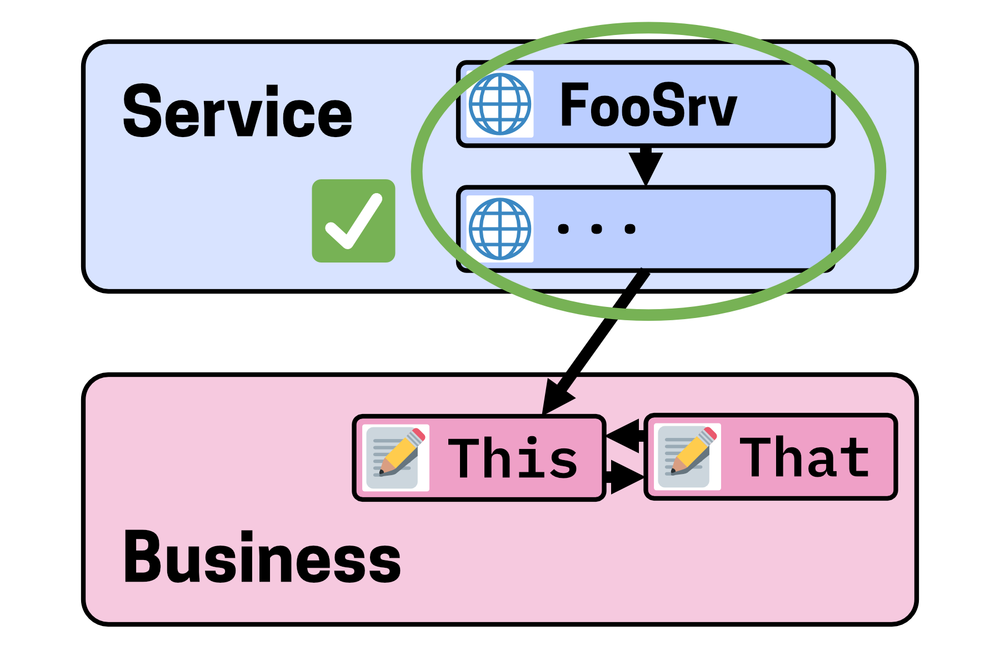
Building a ratchet: strict_dependencies
strict_dependencies'false'strict_dependencies'layered'strict_dependencies'layered_dag'strict_dependencies'dag'
…and then use the ratchet!
Important to have:
- a reason to refactor
- comprehensive documentation
- targeted tooling
- organizational support
Developer velocity and production latency improved because
we
by
and
modularized a large, stubborn codebase
having a point of leverage (packages and
layering)
picking good ratchets
(strict_dependencies)
What makes a good ratchet?
- local
- Sorbet: per-file
- Dependencies: per-package
- incremental
- Sorbet:
falsetotruetostrict - Dependencies:
falsetolayeredtodag
- Sorbet:
- actionable
- Sorbet: “Where do I need types in my current files?”
- Dependencies: “What bad edges can I remove from my current package?”
Agenda 🎯
Improving developer satisfaction with Sorbet
Making a Ruby monolith more modular
Lessons learned from ratchets ratcheted
How can this approach fall down?
In theory, there is no difference between theory and practice. In practice, there is.
— Walter J. Savitch, relaying an overheard quote at a computer science conference
Tools aren’t always perfect at first!
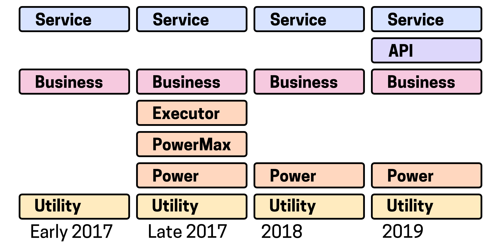
Tools aren’t always perfect at first!
- Originally packaging was also
runtime-enforced
- …but this was invasive and potentially risky.
- Originally, we intended exports to be
hand-written
- …but this slowed down developer velocity unacceptably.
Corollary: don’t rush the launch!
- First impressions matter a lot!
- For Sorbet:
- …run in quiet mode for a while
- For packages:
- …proved out on our CI service before we moved on to other code.
Who ratchets the ratchets?
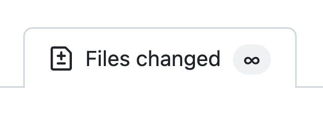
Our approach: two-level ratchets
Our approach: two-level ratchets
class MyPackage < PackageSpec
sorbet min_typed_level: 'strict', test_min_typed_level: 'true'
# ...
end
Our approach: two-level ratchets
- After two weeks, added to
try_not_to_regress.yaml- …but can be removed by anyone.
- After another two weeks, added to
never_regress.yaml- …and can only be removed with our approval!
Supporting tooling
- Gen-packages
- …with a lot of attention to error messages, since graphs are hard!
- Package explorer
- …and a whole host of visibility/analysis tools
- Dependency Doctor
- …for when automated suggestions are great!
- LSP integration
- …for immediate feedback when possible!
Successful codebase-wide refactors
- Find points of leverage
- Build clear, enforceable ratchets
- Staff a focused and supported team
- (…and have patience: it’s hard work!)